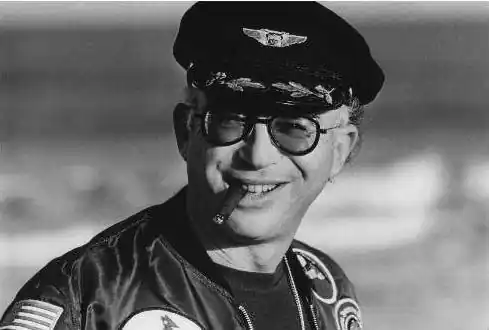
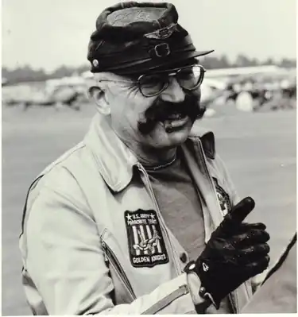
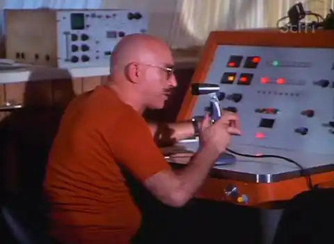

Мартін Кейдін (Martin Caidin / Martin S. Caidin / Martin Strasser Caidin) — американський письменник, журналіст, визнаний авторитет в області авіації і аеронавтики. Автор понад 50 художніх і науково-популярних книг і понад 1000 журнальних статей. Серед його книг — численні праці з військової історії, особливо в галузі авіації.
Мартін народився 14 вересня 1927 року в Нью-Йорку. Ледве йому виповнилося 2 роки, коли померла його мати. Так як друга дружина його батька не захотіла займатися вихованням дитини, він був відданий в притулок, звідки його пізніше забрали бабуся і дідусь — він ріс у них на фермі, в штаті Нью-Йорк. У 15 років поїхав у Нью-Йорк-Сіті — вчитися, працювати. Рано усвідомив свою любов до письменництва і до авіації: опублікував свою першу статтю в 16 років, вона була написана про дизайн військових літаків Messerschmitt. Після закінчення коледжу в 1945 році вступив на роботу в торговий флот, і пропрацював пару років в Японії. З 1947 по 1950 рік служив у ВПС США, дослужився до звання сержанта. Після служби переїхав до Флориди, де реалізував свою любов до авіації в роботі і хобі, співпрацював в одній з ранніх космічних програм. Його фотографічна пам'ять заповнює упущення в освіті. У 1955 році він працював в команді Вернера фон Брауна на мисі Канаверал. Трохи пізніше — до 1964 року працював в якості консультанта для різних авіакомпаній. Після 1975 роки купив і капітально відремонтував — "відновив до повної летності" — найстаріший з тих, що вижили літаків Jukers, Ju 52 1936 року випуску, показував його на авіашоу (нерідко сам був пілотом), був учасником встановлення кількох "льотних" рекордів. В "традиційних" літаках налітав тисячі льотних годин — в Норвегії, Еквадорі, США та ін. Був полум'яним "пропагандистом авіації" — двічі удостоївся премії Асоціації авіаційних / космічних письменників як видатної автор книг на теми авіації. Він, крім того, заснував компанію з метою просування популяризації повітроплавання серед молоді. Кейдін також викладав авторський курс прогресивної журналістики в Університеті Флориди в Гейнсвіллі під назвою "Закон Кейдіна".
Він написав, крім наукової літератури по аерокосмонавтики, військової історії і авіації, ряд науково-фантастичних і пригодницьких романів. Перша НФ-публікація — The Long Night (1956). Успіх приніс роман Marooned (1964) / В полоні орбіти, успішно екранізований. "Історія вигаданого американського астронавта Річарда Пруетта, ледь не залишився навічно в космосі, приваблювала своєю достовірністю". (А.Б. Железняков, ст. "Секретний космос"). Дуже похвально відгукнувся про роман і Герман Титов — автор передмови до російського перекладу. Його найвідомішим романом вважають Cyborg (1972), який став основою ТВ-серії The Six Million Dollar Man / "Людина на шість мільйонів доларів". Цей роман започаткував авторської серії з 4 книг і "відкрив тему" (злиття людини і машини з використанням заміщають частин тіла — біоніка) для багатьох інших авторів. Письменник, професор, викладач, пілот, каскадер і авантюрист — таким згадували його близькі люди — помер 24 березня 1997, після багатьох років захворювання на рак, в Таллахассі, штат Флорида. Його прах був розвіяний друзями з борта літака Cessna над океаном під час меморіальної служби